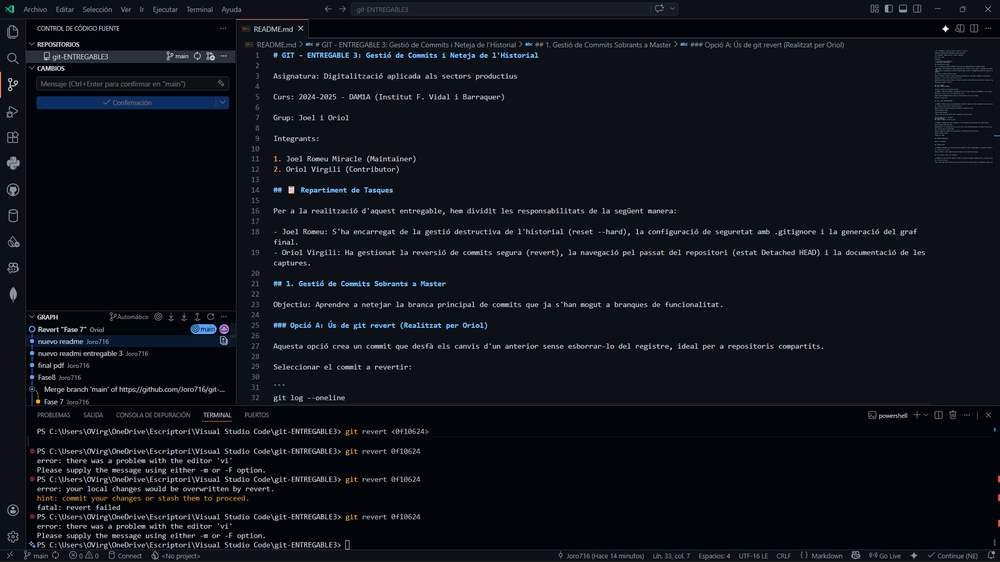
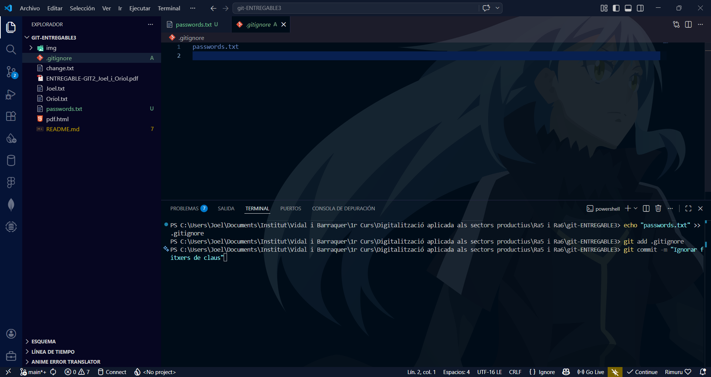
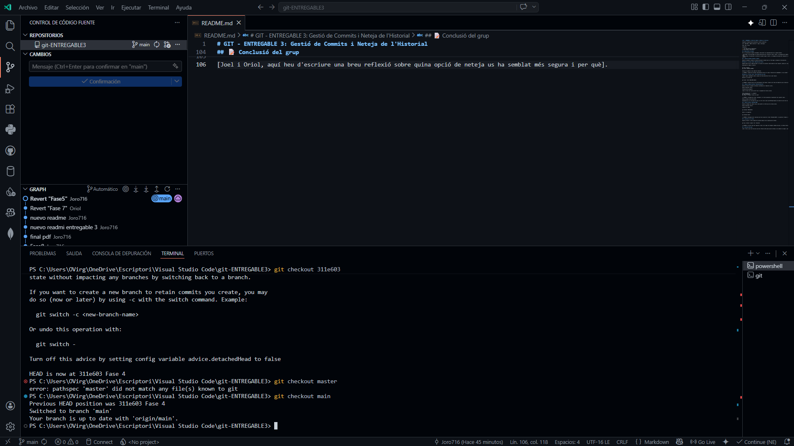
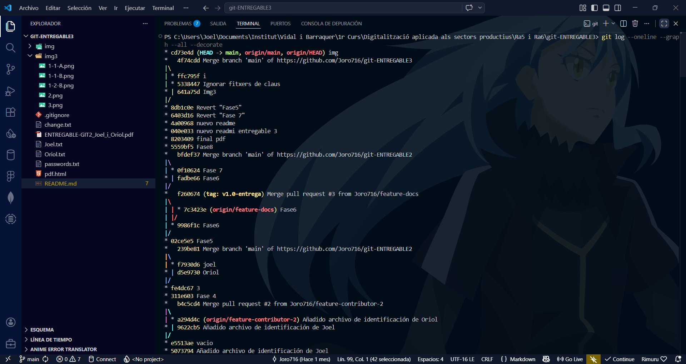

1. Gestió de Commits (Opció A: Revert)
L'Oriol ha realitzat una reversió amb git revert, creant un nou commit que desfà canvis sense esborrar el registre.
 CAPTURA 1: Execució de git revert (Oriol).
CAPTURA 1: Execució de git revert (Oriol).
Asignatura: Digitalització aplicada als sectors productius
Grup: Joel i Oriol - DAM1A
L'Oriol ha realitzat una reversió amb git revert, creant un nou commit que desfà canvis sense esborrar el registre.
CAPTURA 1: Execució de git revert (Oriol).
En Joel ha fet servir git reset --hard per netejar la branca master tornant a un punt d'inici original.

CAPTURA 2: Estat del log abans i després del reset (Joel).Configuració de .gitignore per ignorar fitxers sensibles com passwords.txt.

CAPTURA 3: Verificació de fitxers ignorats (Joel).Navegació per commits antics. L'Oriol ha provat de moure el punter HEAD i tornar a master de forma segura.

CAPTURA 4: Avís de Git sobre l'estat Detached HEAD (Oriol).Vista completa de l'arbre del projecte amb git log --graph --all on es veu la neteja final.

CAPTURA 5: Graf final amb tot l'historial del grup (Joel).Considerem que revert és millor per a treballs en grup i reset per a neteges locals ràpides.